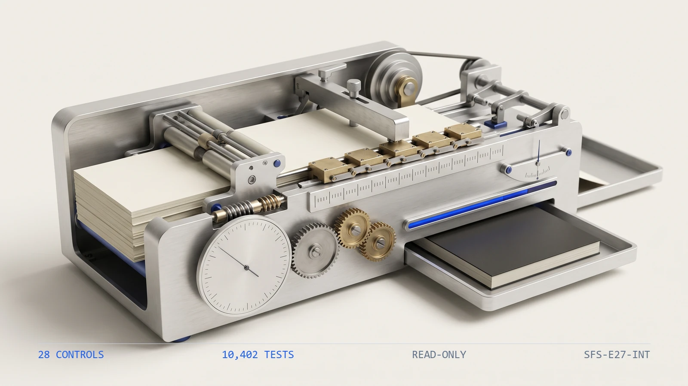

10,4021
Tests
the collected checks that pin this engine's behavior
ENGINE 27
SFS-E27-INT · DEBT SERVICE · REV 2026-07-24 · PRODUCTION
PRODUCTION = runnable end-to-end, CI-backed, full test suite passing. All data fictional and seeded.
Does the interest a note reports equal the interest its own terms produce?
A lender carries a portfolio of promissory notes, and every period somebody accrues interest on each one, rolls its balance forward, and posts a journal entry that is supposed to tie to both sides. This engine proves, note by note, that the interest a schedule reports is the interest its own terms produce. It reads the seven artifacts a debt-service record carries -- the note register, the roll-forward schedule, the interest journal, the trial balance, the interest summary, the maturity watchlist and the debt-service report -- and runs twenty-eight deterministic controls over them. Is the loan file complete and the review date legible, are the note ids unique and each note's rate, day-count and principal well-formed with two distinct sides, does every schedule row carry its key fields and tie its day count to its own span, does each period's accrued interest re-derive from beginning balance times rate times days over the day-count year, does every ending balance rebuild from beginning plus advance plus accrued minus payment and continue as the next period's beginning, does the schedule open at the note's principal, does each period accrue at the stated or stepped default rate, does accrual stop at maturity, is a prepayment-barred note left alone and a subordinate kept behind its senior, no payment beyond the balance owed and a payoff settled to zero, do the reciprocal receivable and payable and the interest income and expense each tie the schedule, does the journal prove to zero and tie the accrual and cover every note, and do the settled counts and the maturity watchlist recompute from the schedule beneath them. It rebuilds every figure through one shared accrual kernel, compares with exact ==, measures every maturity and gate test to the as_of review date rather than the system clock, and never writes to a source artifact.
An amortization schedule is the most trusted column on the debt-service worksheet: a beginning balance, a rate, an accrual, an ending, repeated down the page. That is exactly why it drifts. None of the ways it goes wrong look wrong in a column of balances. A period accrues at the wrong rate, on the wrong balance, or over the wrong day count, and the booked interest is off by an amount too small to notice against a six-figure balance -- until it compounds. One period's ending is not the next period's beginning, an advance is added but never lands, a payment relieves more than was owed, or the payoff leaves a residual cent instead of settling to zero. A gate is missed -- interest keeps accruing past maturity, the default rate never steps after an event of default, a note barred from prepayment is paid down early, a subordinated note is paid ahead of the senior it sits behind. And the two sides quietly stop reconciling -- the receivable and the payable drift apart, interest income no longer equals interest expense, the monthly journal no longer ties the accrual it was meant to record. The engine rebuilds every accrual and every balance from the note's own terms through one shared kernel and compares with exact ==, enforces each gate as a date or a threshold rather than a judgement, ships a planted-defect file for every registered control, and states its benchmark as a command rather than a claim. A cent of drift is invisible until someone recomputes the interest the note already booked.
Nine control families run in registry order over each loan file. The first proves the others had something to read and that the review date is legible, because a control that passes on absent evidence reports assurance it never performed.
A lender carries notes receivable and interest income; the reciprocal borrower carries notes payable and interest expense; and every period somebody accrues interest, rolls the balance forward, and posts a journal entry that is supposed to tie to both sides. The question is narrower and entirely arithmetic: rebuild each note's accrual from its stated rate and day-count, roll the balance forward row by row, and prove the schedule, the reciprocal GL and the journal all agree. Four failures hide inside that, and none of them look wrong in a column of numbers. The accrual drifts from the terms -- a period accrues at the wrong rate, on the wrong balance, or over the wrong day count, and the booked interest is off by an amount too small to notice against a six-figure balance until it compounds. The roll-forward breaks -- one period's ending is not the next period's beginning, an advance is added but never lands, a payment relieves more than was owed, the payoff leaves a residual cent instead of settling to zero. A gate is missed -- interest keeps accruing past maturity, the default rate never steps after an event of default, a note barred from prepayment is paid down early, a subordinated note is paid ahead of the senior it sits behind. And the two sides stop reconciling -- the receivable and the payable drift apart, interest income no longer equals interest expense, the monthly journal no longer ties the accrual it was meant to record. None of these are judgment calls. They are equalities and date gates -- an accrual against beginning times rate times days with exact ==, an ending against its re-derivation, a period start against a maturity date, a payment against the period's accrued interest -- which a deterministic control settles better than a schedule inherited by whoever tracks the portfolio this year.
The seeded demo runs every control over every loan file7. The CLI generates thirty fictional loan files -- one clean baseline and one carrying each of the twenty-nine planted defects -- then runs all twenty-eight controls over each. The clean file returns PASS with no flags; every defect file returns REVIEW or FAIL and names the control it tripped along with the reason that control exists.
The day-count and the accrual are independent controls8. A schedule can accrue interest that re-derives perfectly and still be wrong, because it re-derives against the very day count that is wrong. One defect file stretches a period's end date without touching its stated day count: acc_interest_rederives still passes -- the accrual matches the stated day count -- while acc_day_count_ties fails, because the stated day count no longer equals the span between the period's own two dates. The two controls catch different failures at the same boundary.
The accrual is recomputed, not read back9. A defect file adds ten dollars to one period's stated accrued figure without changing the note's rate, balance or day count. acc_interest_rederives rebuilds the interest from beginning times rate times days through the shared kernel and fails on the cent, proving the accrued figure is recomputed from the terms beneath it rather than trusted as stated.
| Command | Operation | Output | Exit | Artifacts |
|---|---|---|---|---|
python run.py | regenerate the seeded fictional corpus, run all twenty-eight controls, write both reports | per-file verdicts and every actionable finding, then the overall verdict | 2 for the bundled corpus, which carries a planted defect for every control by design | interest_report.json, interest_report.md, samples/ |
python -m interest_engine samples | analyze an existing folder of loan files without regenerating it | per-file verdicts and findings | 0 PASS / 1 REVIEW / 2 FAIL / 3 usage | none unless --json or --md is passed |
python -m interest_engine samples --generate --quiet | regenerate the corpus and print only the overall verdict | a single verdict line | 0 PASS / 1 REVIEW / 2 FAIL / 3 usage | samples/ |
python -m pytest interest_engine/tests -q | run the full test suite for this engine | 10402 passed | 0 when every test passes | none |
| Measure | Result |
|---|---|
| Engine tests10 | 10,402 tests collected live collection from the engine directory |
| Registered controls11 | 28 controls counted from the registry, not from documentation |
| Planted defects12 | 29 defect files every registered control has at least one file that trips it |
| Control coverage13 | 100 percent of controls with a planted defect no control ships without a file demonstrating it firing |
The engine has no write path and therefore no autonomy to gate. It produces findings; a person decides whether a note is carried into the close and whether a maturing note is refinanced or repaid.
Deterministic envelope. seeded fictional inputs, read-only operation, offline default mode.
Demo gate. FAIL on the bundled corpus, by design -- it carries a planted defect for every registered control
| Severity | Verdict | Action |
|---|---|---|
| No findings above PASS | PASS | carry the mechanically clean loan file into the documented sign-off and debt-service review |
| One or more FLAG, no FAIL | REVIEW | a human resolves each flag; a note maturing inside the lead-time window and a maturity watchlist that does not tie the evidence both land here |
| One or more FAIL | FAIL | the note or figure is not carried into the close until the failing control is cleared -- an accrual that does not re-derive, a broken roll-forward, a missed gate, a reciprocity break, or a rollup that does not recompute |

Distribution: public repository, MIT license.
One conversation: you describe the work that consumes your team's month; we tell you plainly what this engine can take over, what it can't, and what a scoped first phase would cost. Your people keep approval authority.
Book a free consultation